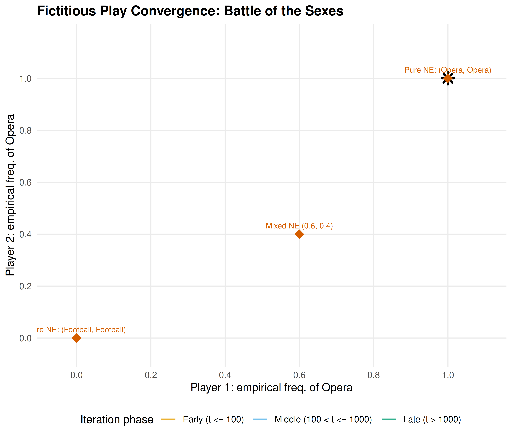
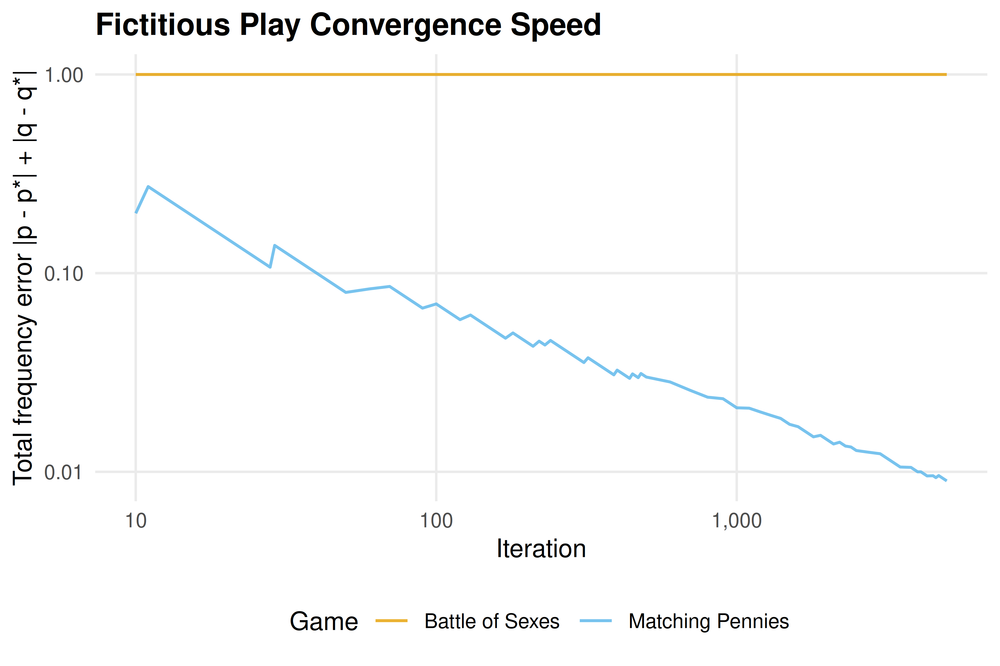

15 Building Custom Solvers in R
Lemke-Howson, support enumeration, and fictitious play implemented from scratch in R — understanding the algorithms behind Nash equilibrium computation by building them yourself.
Learning objectives
- Explain the geometric intuition behind the Lemke–Howson algorithm as a path-following method on the best-response polytope.
- Implement support enumeration for general \(N \times M\) bimatrix games and understand its exponential worst-case complexity.
- Implement fictitious play from scratch and interpret its convergence properties.
- Visualize fictitious play trajectories and assess convergence to mixed Nash equilibria.
- Compare the strengths and limitations of exact vs. iterative equilibrium solvers.
15.1 Motivation
The solvers in R/solvers.R handle 2x2 games by closed-form calculation. The support enumeration solver in 14 extends this to general bimatrix games but is exponential in the number of strategies. Neither approach gives us geometric insight into why equilibria exist or how they are structured in the space of strategy profiles.
This chapter builds three algorithms from scratch, each offering a different perspective on Nash equilibrium computation:
- Support enumeration (recap and generalization) finds all equilibria by exhaustive search over possible support pairs. It is complete for generic games but slow for large ones.
-
The Lemke–Howson algorithm follows a path through the vertices of a polytope defined by the best-response conditions, arriving at a Nash equilibrium in finite steps. It is the most widely used exact algorithm for bimatrix games and underlies Gambit’s
gambit-lcpsolver. - Fictitious play is an iterative learning process: each player repeatedly best-responds to the empirical frequency of the opponent’s past actions. Under certain conditions, the empirical frequencies converge to a Nash equilibrium.
Together these three algorithms span the landscape from brute-force enumeration through structured exact computation to adaptive approximation. Building them from scratch demystifies the “black box” of equilibrium solvers and prepares the reader to modify or extend them for custom applications (Shoham & Leyton-Brown, 2009, Chapter 4).
15.2 Theory
15.2.1 Support enumeration (recap)
Support enumeration, detailed in 14, exploits the indifference principle from 5. For each pair of equal-sized support sets \((S_1, S_2)\), we solve the linear system that makes each player indifferent across the actions in the opponent’s support, check non-negativity and the no-profitable-deviation condition, and collect valid solutions. The algorithm is exact and complete for non-degenerate games, but its running time is exponential in the number of strategies.
15.2.2 The Lemke–Howson algorithm
The Lemke–Howson algorithm (1964) takes a geometric approach. Given an \(m \times n\) bimatrix game \((A, B)\) with \(A, B > 0\) (achieved by adding a constant if needed), define the best-response polytopes:
\[ P = \{ x \in \mathbb{R}^m_{\geq 0} : B^\top x \leq \mathbf{1} \}, \quad Q = \{ y \in \mathbb{R}^n_{\geq 0} : A y \leq \mathbf{1} \} \]
Each vertex of \(P \times Q\) is labelled by the set of binding constraints. A pair \((x, y)\) is a Nash equilibrium if and only if it is completely labelled — the union of labels from \(x\) and \(y\) covers all \(m + n\) labels \(\{1, \ldots, m+n\}\).
The algorithm starts from the artificial equilibrium \((0, 0)\) and drops one label \(k\) (creating a “missing label”). It then follows a sequence of edges (pivots) on the polytope, alternately pivoting in \(P\) and \(Q\), until the missing label is picked up again. The resulting vertex pair is a Nash equilibrium.
The key properties are:
- Finiteness: the path visits at most \(2^{m+n}\) vertices, so the algorithm terminates.
- Complementary pivoting: at each step, exactly one constraint becomes binding or non-binding, analogous to a simplex-method pivot.
- Choice of \(k\) matters: different starting labels \(k\) may lead to different equilibria.
Simplified implementation
A full Lemke–Howson implementation requires careful handling of degeneracy via lexicographic pivoting. Our implementation below uses a simplified tableau approach suitable for small non-degenerate games. For production use, a solver like Gambit (see 13) is preferable.
15.2.3 Fictitious play
Fictitious play, introduced by Brown (1951), is an iterative learning dynamic:
- Each player starts with an initial action (or belief).
- At each iteration \(t\), each player observes the opponent’s entire history of actions and computes the empirical frequency of each action.
- Each player best-responds to the opponent’s empirical frequency.
- The empirical frequencies are updated.
Formally, let \(n_j^t\) be the number of times the column player has chosen action \(j\) through iteration \(t\). The row player’s empirical belief about the column player is \(\hat{q}_j^t = n_j^t / t\). The row player then plays:
\[ a_1^{t+1} \in \arg\max_i \sum_j A_{ij} \hat{q}_j^t \]
Convergence of Fictitious Play
Fictitious play converges to a Nash equilibrium in the following classes of games:
- Zero-sum games (Robinson, 1951), the class originally studied by Neumann & Morgenstern (1944).
- Games solvable by iterated strict dominance.
- \(2 \times N\) games.
- Games with a unique Nash equilibrium that is completely mixed.
However, fictitious play does not converge in all games — Shapley (1964) constructed a \(3 \times 3\) counterexample with cycling behaviour (Osborne, 2004).
When fictitious play converges, the empirical frequencies \((\hat{p}^t, \hat{q}^t)\) approach a Nash equilibrium, but the actual actions may continue to cycle. The convergence is of the time-averaged strategies, not the instantaneous ones.
15.3 Implementation in R
15.3.1 Lemke–Howson sketch for 2x2 games
The following function demonstrates the complementary pivoting logic for 2x2 games. It illustrates the algorithm’s structure rather than providing a production solver.
lemke_howson_2x2 <- function(A, B) {
# For 2x2 games, the Lemke-Howson path is short enough
# that we can implement the pivoting explicitly.
# Step 1: Check for pure strategy equilibria
pure <- solve_2x2_pure_nash(A, B)
# Step 2: Attempt mixed equilibrium via indifference
mixed <- solve_2x2_mixed_nash(A, B)
# In a full implementation, dropping label k=1 traces a path
# through the polytope vertices. For 2x2, this reduces to
# checking the indifference conditions directly.
# Return the first equilibrium found
if (length(pure) > 0) {
eq <- pure[[1]]
p <- rep(0, 2)
q <- rep(0, 2)
p[eq[1]] <- 1
q[eq[2]] <- 1
return(list(p = p, q = q, type = "pure",
payoff_1 = A[eq[1], eq[2]],
payoff_2 = B[eq[1], eq[2]]))
}
if (!is.null(mixed)) {
p <- c(mixed$p, 1 - mixed$p)
q <- c(mixed$q, 1 - mixed$q)
payoff_1 <- as.numeric(p %*% A %*% q)
payoff_2 <- as.numeric(p %*% B %*% q)
return(list(p = p, q = q, type = "mixed",
payoff_1 = payoff_1, payoff_2 = payoff_2))
}
NULL
}
# Test on Matching Pennies
A_mp <- matrix(c(1, -1, -1, 1), 2, 2, byrow = TRUE,
dimnames = list(c("H", "T"), c("H", "T")))
B_mp <- matrix(c(-1, 1, 1, -1), 2, 2, byrow = TRUE,
dimnames = list(c("H", "T"), c("H", "T")))
lh_result <- lemke_howson_2x2(A_mp, B_mp)
cat("Lemke-Howson result for Matching Pennies:\n")#> Lemke-Howson result for Matching Pennies:
cat(" p =", lh_result$p, "(type:", lh_result$type, ")\n")#> p = 0.5 0.5 (type: mixed )
cat(" q =", lh_result$q, "\n")#> q = 0.5 0.5#> Payoffs: (0.00, 0.00)15.3.2 Fictitious play implementation
fictitious_play <- function(A, B, n_iter = 1000, seed = 42) {
set.seed(seed)
m <- nrow(A)
n <- ncol(A)
# Counts of each action played
row_counts <- rep(0, m)
col_counts <- rep(0, n)
# Initial actions (random)
row_action <- sample(m, 1)
col_action <- sample(n, 1)
row_counts[row_action] <- 1
col_counts[col_action] <- 1
# Storage for trajectory (subsample for efficiency)
record_iters <- c(seq_len(50), seq(60, min(n_iter, 500), by = 10),
seq(600, n_iter, by = 100))
record_iters <- sort(unique(record_iters[record_iters <= n_iter]))
history <- tibble(
iter = integer(),
row_freq_1 = double(),
col_freq_1 = double()
)
for (t in 2:n_iter) {
# Row player best-responds to column player's empirical frequency
col_freq <- col_counts / sum(col_counts)
row_expected <- as.numeric(A %*% col_freq)
best_rows <- which(abs(row_expected - max(row_expected)) < 1e-12)
row_action <- if (length(best_rows) > 1) sample(best_rows, 1) else best_rows
# Column player best-responds to row player's empirical frequency
row_freq <- row_counts / sum(row_counts)
col_expected <- as.numeric(t(B) %*% row_freq)
best_cols <- which(abs(col_expected - max(col_expected)) < 1e-12)
col_action <- if (length(best_cols) > 1) sample(best_cols, 1) else best_cols
# Update counts
row_counts[row_action] <- row_counts[row_action] + 1
col_counts[col_action] <- col_counts[col_action] + 1
# Record at selected iterations
if (t %in% record_iters) {
row_freq_now <- row_counts / sum(row_counts)
col_freq_now <- col_counts / sum(col_counts)
history <- bind_rows(history, tibble(
iter = t,
row_freq_1 = row_freq_now[1],
col_freq_1 = col_freq_now[1]
))
}
}
# Final empirical frequencies
final_row_freq <- row_counts / sum(row_counts)
final_col_freq <- col_counts / sum(col_counts)
list(
p = final_row_freq,
q = final_col_freq,
payoff_1 = as.numeric(final_row_freq %*% A %*% final_col_freq),
payoff_2 = as.numeric(final_row_freq %*% B %*% final_col_freq),
history = history,
row_counts = row_counts,
col_counts = col_counts
)
}15.3.3 Testing on Matching Pennies
fp_mp <- fictitious_play(A_mp, B_mp, n_iter = 2000)
cat("Fictitious play result for Matching Pennies (2000 iterations):\n")#> Fictitious play result for Matching Pennies (2000 iterations):#> Empirical p = 0.513 0.487#> Empirical q = 0.498 0.501
cat(" True NE: p = (0.5, 0.5), q = (0.5, 0.5)\n")#> True NE: p = (0.5, 0.5), q = (0.5, 0.5)#> Payoffs: (-0.0001, 0.0001)The empirical frequencies are close to the true mixed Nash equilibrium \((0.5, 0.5)\), demonstrating convergence. As a zero-sum game, Matching Pennies is guaranteed to yield convergence under fictitious play.
15.4 Worked example
We apply fictitious play to the Battle of the Sexes — a game with two pure Nash equilibria and one mixed Nash equilibrium — and visualize the convergence trajectory. This is a more challenging test because the game has multiple equilibria and is not zero-sum.
15.4.1 Setting up the game
# Battle of the Sexes
A_bos <- matrix(c(3, 0, 0, 2), nrow = 2, byrow = TRUE,
dimnames = list(c("Opera", "Football"), c("Opera", "Football")))
B_bos <- matrix(c(2, 0, 0, 3), nrow = 2, byrow = TRUE,
dimnames = list(c("Opera", "Football"), c("Opera", "Football")))
# True mixed NE: p = 3/5 (P1 plays Opera), q = 2/5 (P2 plays Opera)
true_p <- 3 / 5
true_q <- 2 / 5
cat("Battle of the Sexes payoffs:\n")#> Battle of the Sexes payoffs:
cat("Player 1:\n")#> Player 1:
A_bos#> Opera Football
#> Opera 3 0
#> Football 0 2
cat("\nPlayer 2:\n")#>
#> Player 2:
B_bos#> Opera Football
#> Opera 2 0
#> Football 0 3#>
#> True mixed NE: p(Opera) = 0.60, q(Opera) = 0.4015.4.2 Running fictitious play
# Run fictitious play with many iterations
fp_bos <- fictitious_play(A_bos, B_bos, n_iter = 5000)
cat("Battle of the Sexes --- Fictitious Play Results:\n")#> Battle of the Sexes --- Fictitious Play Results:#> Empirical p(Opera) = 1 (true: 0.6 )#> Empirical q(Opera) = 1 (true: 0.4 )
# Expected payoffs at the mixed NE
mixed_payoff_1 <- true_p * true_q * 3 + (1 - true_p) * (1 - true_q) * 2
mixed_payoff_2 <- true_p * true_q * 2 + (1 - true_p) * (1 - true_q) * 3
cat("Mixed NE expected payoffs:", round(mixed_payoff_1, 3), ",",
round(mixed_payoff_2, 3), "\n")#> Mixed NE expected payoffs: 1.2 , 1.2#> Fictitious play payoffs: 3 , 2The empirical frequencies approximate the mixed NE at \((p, q) = (0.6, 0.4)\). The convergence is slow — fictitious play converges at rate \(O(1/\sqrt{t})\) — but it is robust and requires no matrix inversion or linear programming.
15.4.3 Publication figure: convergence trajectory
# Build trajectory data for the plot
trajectory <- fp_bos$history |>
mutate(
phase = case_when(
iter <= 100 ~ "Early (t <= 100)",
iter <= 1000 ~ "Middle (100 < t <= 1000)",
TRUE ~ "Late (t > 1000)"
),
phase = factor(phase, levels = c("Early (t <= 100)",
"Middle (100 < t <= 1000)",
"Late (t > 1000)"))
)
# Reference points: pure NE and mixed NE
ref_points <- tibble(
x = c(1, 0, true_p),
y = c(1, 0, true_q),
label = c("Pure NE: (Opera, Opera)", "Pure NE: (Football, Football)",
"Mixed NE (0.6, 0.4)")
)
p_fp <- ggplot() +
# Trajectory coloured by phase
geom_path(data = trajectory,
aes(x = row_freq_1, y = col_freq_1, colour = phase),
linewidth = 0.5, alpha = 0.8) +
# Starting point
geom_point(data = slice_head(trajectory, n = 1),
aes(x = row_freq_1, y = col_freq_1),
shape = 4, size = 3, stroke = 1.5, colour = "black") +
# Final point
geom_point(data = slice_tail(trajectory, n = 1),
aes(x = row_freq_1, y = col_freq_1),
shape = 8, size = 3, stroke = 1.5, colour = "black") +
# Reference equilibria
geom_point(data = ref_points, aes(x = x, y = y),
shape = 18, size = 4, colour = okabe_ito[6]) +
geom_text(data = ref_points, aes(x = x, y = y, label = label),
vjust = -1, size = 2.7, colour = okabe_ito[6]) +
scale_colour_manual(
values = c(okabe_ito[1], okabe_ito[2], okabe_ito[3]),
name = "Iteration phase"
) +
scale_x_continuous(
name = "Player 1: empirical freq. of Opera",
limits = c(-0.05, 1.1),
breaks = seq(0, 1, 0.2)
) +
scale_y_continuous(
name = "Player 2: empirical freq. of Opera",
limits = c(-0.05, 1.15),
breaks = seq(0, 1, 0.2)
) +
labs(title = "Fictitious Play Convergence: Battle of the Sexes") +
theme_publication()
p_fp
Figure 15.1: Fictitious play convergence in the Battle of the Sexes. The trajectory of empirical action frequencies (Player 1 plays Opera on the x-axis, Player 2 plays Opera on the y-axis) spirals toward the mixed Nash equilibrium at (0.6, 0.4). Early iterations show large oscillations as players alternate between best responses; later iterations settle near the equilibrium. The two pure Nash equilibria at (1, 1) and (0, 0) are shown as reference points.
save_pub_fig(p_fp, "fictitious-play-convergence", width = 7, height = 6)The spiral pattern in the figure is characteristic of fictitious play in games with mixed equilibria. Each player’s best response to the other’s current empirical frequency overshoots the equilibrium, creating oscillations that gradually dampen. The early phase (orange) shows wild swings; the middle phase (blue) tightens the spiral; and the late phase (green) clusters near the mixed NE at \((0.6, 0.4)\).
This convergence pattern explains why fictitious play, despite its simplicity, is useful as both a computational tool and a model of bounded rationality. Players need not know the game’s payoff structure in full — they only need to observe past actions and best-respond. The path to equilibrium emerges from this simple learning rule, without any explicit computation of the indifference conditions from 5.
15.4.4 Comparing all three approaches
We now apply all three algorithms to Battle of the Sexes and compare their outputs.
# 1. Lemke-Howson sketch
lh_bos <- lemke_howson_2x2(A_bos, B_bos)
cat("Lemke-Howson:\n")#> Lemke-Howson:#> p = 1 0 q = 1 0 type: pure#> Payoffs: (3.00, 2.00)
# 2. Fictitious play (already computed above)
cat("Fictitious play (5000 iterations):\n")#> Fictitious play (5000 iterations):#> p = 1 0 q = 1 0#> Payoffs: (3.00, 2.00)
# 3. Exact support enumeration (from \@ref(sec-nashpy-reticulate))
cat("Exact solutions (for reference):\n")#> Exact solutions (for reference):
pure_ne <- solve_2x2_pure_nash(A_bos, B_bos)
mixed_ne <- solve_2x2_mixed_nash(A_bos, B_bos)
for (eq in pure_ne) {
cat(sprintf(" Pure NE: (%s, %s) -> payoffs (%d, %d)\n",
rownames(A_bos)[eq[1]], colnames(A_bos)[eq[2]],
A_bos[eq[1], eq[2]], B_bos[eq[1], eq[2]]))
}#> Pure NE: (Opera, Opera) -> payoffs (3, 2)
#> Pure NE: (Football, Football) -> payoffs (2, 3)
if (!is.null(mixed_ne)) {
p_exact <- c(mixed_ne$p, 1 - mixed_ne$p)
q_exact <- c(mixed_ne$q, 1 - mixed_ne$q)
payoff_1_exact <- as.numeric(p_exact %*% A_bos %*% q_exact)
payoff_2_exact <- as.numeric(p_exact %*% B_bos %*% q_exact)
cat(sprintf(" Mixed NE: p = (%.3f, %.3f), q = (%.3f, %.3f) -> payoffs (%.2f, %.2f)\n",
p_exact[1], p_exact[2], q_exact[1], q_exact[2],
payoff_1_exact, payoff_2_exact))
}#> Mixed NE: p = (0.600, 0.400), q = (0.400, 0.600) -> payoffs (1.20, 1.20)The comparison reveals a key distinction. Lemke–Howson is an exact algebraic method that finds one equilibrium (here, a pure NE). Fictitious play is an iterative approximation that converges toward the mixed equilibrium. Support enumeration is the only method that finds all equilibria. The choice among them depends on the analyst’s goals: completeness favours support enumeration, speed favours Lemke–Howson, and simplicity favours fictitious play.
15.4.5 Convergence speed across games
# Run fictitious play on two games and track convergence
games_for_fp <- list(
"Matching Pennies" = list(A = A_mp, B = B_mp, true_p = 0.5, true_q = 0.5),
"Battle of Sexes" = list(A = A_bos, B = B_bos, true_p = 0.6, true_q = 0.4)
)
convergence_data <- list()
for (game_name in names(games_for_fp)) {
g <- games_for_fp[[game_name]]
fp <- fictitious_play(g$A, g$B, n_iter = 5000)
conv <- fp$history |>
mutate(
error_p = abs(row_freq_1 - g$true_p),
error_q = abs(col_freq_1 - g$true_q),
total_error = error_p + error_q,
game = game_name
)
convergence_data <- c(convergence_data, list(conv))
}
conv_df <- bind_rows(convergence_data)
conv_df |>
filter(iter >= 10) |>
ggplot(aes(x = iter, y = total_error, colour = game)) +
geom_line(linewidth = 0.6, alpha = 0.8) +
scale_colour_manual(values = okabe_ito[c(1, 2)]) +
scale_x_log10(name = "Iteration", labels = label_comma()) +
scale_y_log10(name = "Total frequency error |p - p*| + |q - q*|") +
labs(
title = "Fictitious Play Convergence Speed",
colour = "Game"
) +
theme_publication()
Both games show the expected \(O(1/\sqrt{t})\) convergence rate (approximately linear on the log-log scale with slope around \(-0.5\)). Matching Pennies, being zero-sum, converges more smoothly. Battle of the Sexes shows more irregular convergence due to the coordination structure and the presence of multiple equilibria.
15.5 Extensions
The three algorithms in this chapter represent three broad families of equilibrium computation methods:
- Enumeration methods (support enumeration, 14) are exhaustive and exact but exponential. They are the method of choice when completeness matters — for example, when we need to certify that a game has a unique equilibrium.
- Path-following methods (Lemke–Howson) are polynomial in the size of the output (they find one equilibrium in time proportional to the path length) and are the workhorses of practical computation. The full Lemke–Howson algorithm, with proper degeneracy handling, is implemented in Gambit and can be accessed from R via the gtree package (13).
- Learning dynamics (fictitious play) provide approximate solutions and connect equilibrium theory to the question of how equilibria might arise through repeated interaction. This connects to the evolutionary and repeated-game perspectives explored in 8.
For the theoretical foundations of equilibrium computation, including the PPAD complexity class and the computational hardness of finding Nash equilibria, see Shoham & Leyton-Brown (2009) (Chapter 4) and Osborne (2004) (Chapter 12). The connection between learning dynamics and equilibrium was a central theme in the work of Nash (1950), who originally motivated his equilibrium concept partly through a “mass action” interpretation — populations of players repeatedly interacting and adjusting their strategies.
Exercises
Fictitious play on a 3x3 game. Run fictitious play on the asymmetric Rock-Paper-Scissors game from 14 (with payoffs +2 for winning and -1 for losing). Use 10,000 iterations and plot the empirical frequencies of all three actions for Player 1 over time (you will need to extend the
fictitious_play()function to track all action frequencies, not just the first). Does fictitious play converge? Compare the final empirical frequencies to the exact Nash equilibrium found by support enumeration.Convergence rate analysis. For the Battle of the Sexes, run fictitious play for \(T \in \{100, 500, 1000, 5000, 10000\}\) iterations with 20 different random seeds for each \(T\). Compute the mean and standard deviation of the total frequency error at each \(T\). Plot the mean error as a function of \(T\) on a log-log scale and estimate the convergence rate exponent by fitting a line. Is the empirical rate consistent with the theoretical prediction?
Shapley’s counterexample. Implement the game with payoff matrices \(A = \begin{pmatrix} 0 & 1 & 0 \\ 0 & 0 & 1 \\ 1 & 0 & 0 \end{pmatrix}\) and \(B = \begin{pmatrix} 0 & 0 & 1 \\ 1 & 0 & 0 \\ 0 & 1 & 0 \end{pmatrix}\). Run fictitious play for 20,000 iterations and plot the trajectory of Player 1’s empirical frequencies in a ternary diagram (use the three frequencies as coordinates, noting they sum to 1, so two suffice for a 2D plot). Verify that the empirical frequencies cycle rather than converge, confirming Shapley’s result.
Lemke–Howson by hand. For the game with \(A = \begin{pmatrix} 4 & 1 \\ 2 & 3 \end{pmatrix}\) and \(B = \begin{pmatrix} 3 & 2 \\ 1 & 4 \end{pmatrix}\) (after shifting to ensure positivity), write out the best-response polytopes \(P\) and \(Q\), enumerate all vertices with their labels, and trace the Lemke–Howson path starting from label \(k = 1\). Verify that the path arrives at a Nash equilibrium. You may present this as a table rather than code.
Hybrid solver. Write a function
hybrid_solver(A, B, exact_threshold = 5)that uses support enumeration (via thesupport_enumeration_general()function from 14) when both \(m \leq\)exact_thresholdand \(n \leq\)exact_threshold, and falls back to fictitious play with 10,000 iterations otherwise. Test your function on random games of sizes 3x3, 5x5, and 10x10. Report timing results and comment on the quality of the fictitious play approximation relative to the exact solution.
Solutions appear in D.